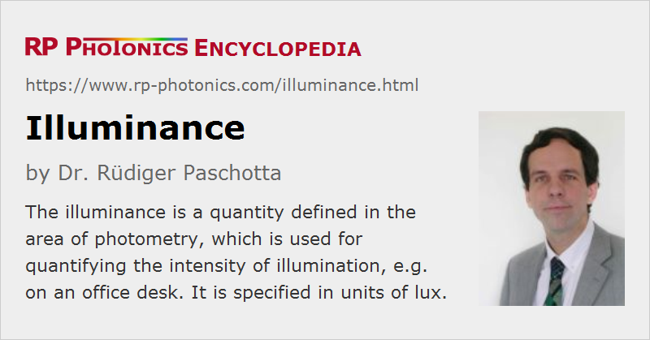

Illuminance
Definition: the incident luminous flux per unit area on a surface
German: Beleuchtungsstärke
Categories: light detection and characterization, optical metrology
Formula symbol: Ev
Units: lux (lx)
How to cite the article; suggest additional literature
Author: Dr. Rüdiger Paschotta
The illuminance is a quantity defined in the area of photometry, which is used for quantifying the intensity of illumination, e.g. on an office desk. In contrast to a physical quantity like the irradiance (the corresponding quantity in radiometry), it takes into account the wavelength-dependent sensitivity of the human eye, typically for photopic vision. The related radiometric quantity is the irradiance, specified in units of W/m2, from which one can calculate the illuminance using a luminosity function.
The SI units of that quantity are lux (lx). 1 lux corresponds to a luminous flux of 1 lumen per square meter (1 lm/m2). This is what is approximately reached by the light of the full Moon on the surface of Earth.
Measurement of Illuminance

Illuminance values can be measured with photometers. Such a device can contain a photodiode, equipped with a suitable optical filter so as to match the wavelength-dependent responsivity of the human eye.
Figure 2 shows a simple multi-purpose measurement device with a built-in photodetector, which is sufficient e.g. for checking the illuminance at a workplace. Dedicated photometers (luxmeters) often have a separate measurement head, which is attached to the display instrument with a cable.
For accurate illuminance measurements, the used photodetector should have the correct angular dependence of its sensitivity. This means that incident photons should contribute to the measurement signal with no dependence on their incidence angle.
Note that due to that accommodation of the eye to different light levels (see below), it is very hard to reliably estimate illuminance levels without using a measurement instrument.
Recommended Illuminance Levels in Rooms
Illuminance values are useful in the context of the illumination of rooms. For office work and reading paper documents, it is recommended to have an illuminance around 500 lx on the desk. For comparison, full sunlight incident on a white paper generates an illuminance of the order of 100,000 lux, which can be uncomfortable. On cloudy days, the illuminance can easily drop to 1000 lx or even below.
Generally, artificial illumination in rooms produces illuminance values which are far below those in direct sunlight, and which are nevertheless sufficient for perfect vision in most cases. Exposure of eyes to high illumination levels, e.g. to bright sunlight, accelerates the aging of the retina (mostly its central part, the macula) and the eye's lens – the latter mainly due to the ultraviolet content of sunlight, while blue light components are also known to lead to macular degeneration over longer periods of time. Therefore, it is recommended to use effective eye protection under intense light conditions.
Note that the human eye can adapt to different illumination levels in a wide range: We have at least some scotopic vision (without color perception) at a very low illumination levels, even below 10−4 lx, while substantially higher illuminance levels than those of sunlight can be tolerated for a while. Partly, that adaptation is achieved by opening or closing the iris, and partly by using different light sensors: three different kinds of cones (for photopic vision with color perception) and one kind of rods (for ]scotopic vision] with substantially higher sensitivity but no color perceptions).
Questions and Comments from Users
Here you can submit questions and comments. As far as they get accepted by the author, they will appear above this paragraph together with the author’s answer. The author will decide on acceptance based on certain criteria. Essentially, the issue must be of sufficiently broad interest.
Please do not enter personal data here; we would otherwise delete it soon. (See also our privacy declaration.) If you wish to receive personal feedback or consultancy from the author, please contact him e.g. via e-mail.
By submitting the information, you give your consent to the potential publication of your inputs on our website according to our rules. (If you later retract your consent, we will delete those inputs.) As your inputs are first reviewed by the author, they may be published with some delay.
See also: photometry, irradiance, photometers
and other articles in the categories light detection and characterization, optical metrology
|  |
If you like this page, please share the link with your friends and colleagues, e.g. via social media:
These sharing buttons are implemented in a privacy-friendly way!